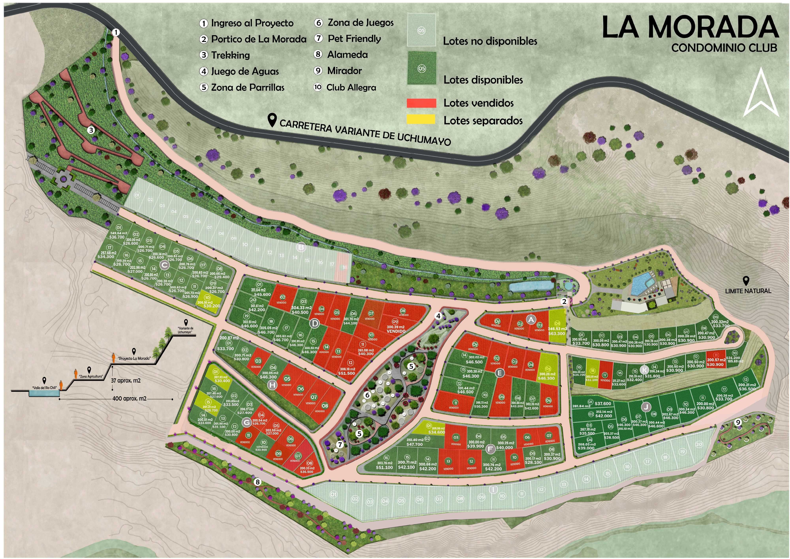

Volver al explorador 3DLa información, a tu alcance
El plano del proyecto.
Consulta el plano comercial del 26 de octubre de 2026, los renders oficiales y el video del terreno. Para elegir un lote y solicitar sus condiciones, utiliza el explorador 3D.



El terreno, en video.
Video proporcionado por el propietario para conocer el lugar. Se reproduce únicamente cuando lo solicitas.
Grabación de referencia del estado del terreno; los renders de esta página representan el desarrollo proyectado.